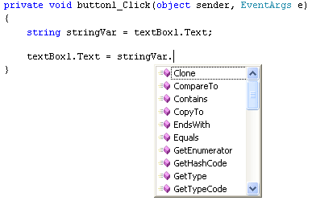
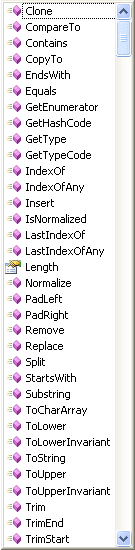
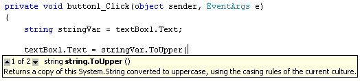
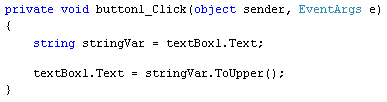
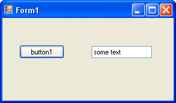
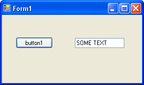

String Manipulation in C# .NET
Quite often, strings of text need manipulating. Data from a textbox need to be tested and checked for things like blank strings, capital letters, extra spaces, incorrect formats, and a whole lots more besides. Data from text files often needs to be chopped and parsed before doing something with it, and the information your get from and put into databases routinely needs to be examined and worked on. All of this comes under the general heading of String Manipulation.
Later in this section, you're going to be creating your very own Hangman programme. The programme will make use of string manipulation techniques. Let's go through a few of the things that will help you deal with strings of text.
C# String Variables
You've already worked with string variables a lot in this book. But there's a lot more to them than meets the eye. Strings come with their own Methods and Properties that you can make use of. To see which Methods and Properties are available, start a new C# Windows Application. Add a button and a textbox to your form. For the textbox, change the Text property to "some text" (make sure the text is in lowercase). Now Double click your button to get at the coding window. Then enter the following string declaration
string stringVar = textBox1.Text;
On a new line, type the following:
textBox1.Text = stringVar.
As soon as you type the full stop at the end, you'll see the IntelliSense list appear:

IntelliSense is showing you a list of Methods and Properties that are available for this string object you have called stringVar. Here's a fuller list:

There's actually one Property on the list. But it's one you use a lot, and we'll see it in action later.
Most of the Methods on the list you won't use at all, and a lot of them are just plain baffling! Some are quite obvious in what they do, though.
Select ToUpper from the list by double clicking it. Because it's a Method, you need some round brackets. Type a left round bracket and you'll see a yellow box appear, giving you the available options for this Method. For the ToUpper Method, there are only two options available:

You can press the Down arrow on your keyboard to see the other one. But the first one, 1 of 2, is the one we need. As the tool tip is telling you, this Method converts the string to upper case. (The current culture it is talking about is which language you're typing in: a symbolic language like Chinese or Japanese will have different grammatical rules than English.)
The round brackets of the Method are empty, meaning it doesn't take any arguments. So just type the right round bracket, followed by a semicolon to end the line. Your code should look like this:

Now run your programme. When the form starts it will look like this:

After you click the button, C# runs the ToUpper Method and converts the text in the text box to uppercase:

Another Method that changes case is the ToLower Method. This is the opposite of ToUpper, and is used in the same way.